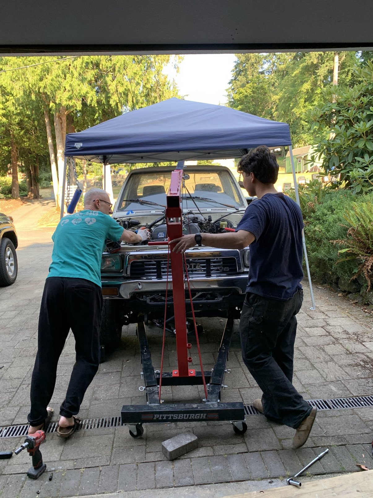

Timing belt service
Timing belt, water pump, tensioner, idlers, thermostat, accessory belts, and related front-engine service.
Mobile mechanic • Toyota 5VZ-FE
Repair and maintenance for vehicles with the Toyota 5VZ-FE 3.4L V6. I handle common mechanical jobs at your location when the work is suitable for mobile service.
My main focus is the 5VZ-FE 3.4L V6 used in Tacomas, 4Runners, T100s, and early Tundras.
I take on maintenance and repair jobs that can be completed safely where the vehicle is parked. If you already know what work you need, send me the vehicle information and I can tell you if it is a good fit for mobile service.
I do repair and maintenance work rather than diagnostic-only appointments.
Timing belt, water pump, tensioner, idlers, thermostat, accessory belts, and related front-engine service.
Valve cover gaskets, spark plug tube seals, and related top-end resealing work.
Radiators, hoses, thermostats, coolant service, water pumps, and worn cooling-system parts.
Spark plugs, plug wires, coils, filters, belts, fluids, and routine maintenance items.
Replacement of starting and charging components when the failed part has already been identified.
Brake service and other straightforward mechanical jobs that are practical to complete on-site.
The main vehicles I work on are Toyota trucks and SUVs equipped with the 3.4L 5VZ-FE.

Mobile labor. Parts are separate.
Before starting a job, we can go over the requested work, parts, and expected labor.
I can supply OEM parts when requested, or we can agree on parts beforehand.
I'm a mechanical engineering student with two summers of professional automotive shop experience.
I have spent a lot of my own time working on Toyota trucks and the 5VZ-FE platform, including maintenance, repair, and engine work. This mobile service is focused on jobs I am familiar with and can reasonably complete on-site.
Include the year, model, mileage, your area, and the work you want done.
I do not currently offer diagnostic-only appointments. If the needed repair or failed component is already known, send me the job details.
Yes. OEM parts can be supplied when requested. Parts cost is separate from labor.
The 5VZ-FE is the main focus. Other straightforward Toyota work may be considered depending on the job.
At a safe, legal, reasonably flat location with enough room to work. Some repairs are not appropriate for mobile service.
Mobile Toyota repair